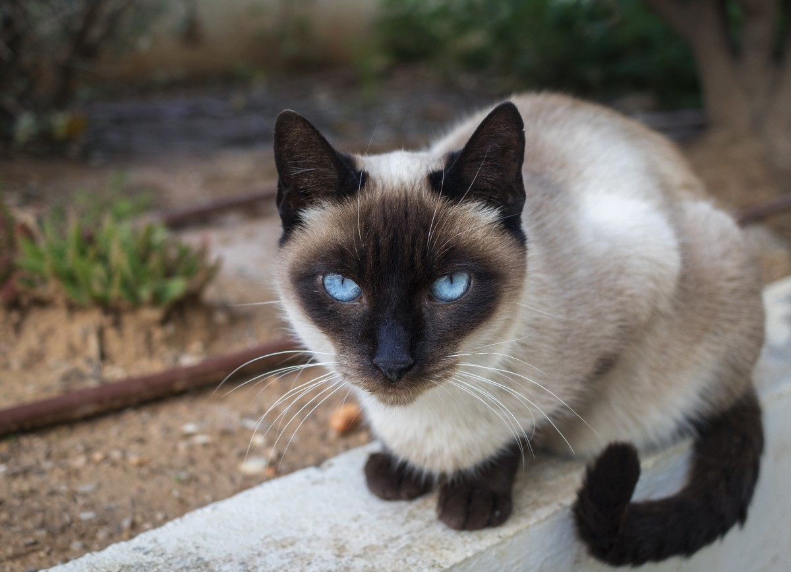

Bienvenido a Mishu: El hogar de todos los amantes de los gatos
"En Mishu compartimos todo lo que necesitas saber sobre gatos: desde consejos de cuidado hasta las razas más adorables. Únete a nuestra comunidad de amantes felinos."
"Mishu es un blog creado especialmente para los amantes de los gatos. En este espacio, compartimos todo lo que necesitas saber sobre estos maravillosos animales: desde consejos de cuidado hasta información sobre las diferentes razas. Si te apasionan los gatos, aquí encontrarás contenido que te encantará."
Para mas informacion sobre gatos populares visita ExpertoAnimal